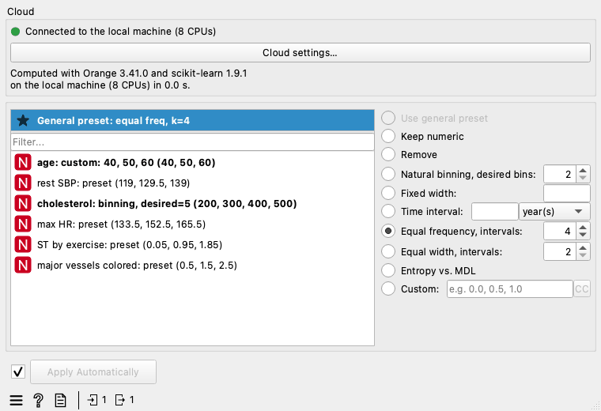

Turns the numeric columns of a cloud table into categorical ones, as Orange's Discretize does, with the cut points found on all rows on the machine.

Like every Cloud widget, it has a Cloud box at the top: whether a machine is connected, Cloud settings… and Stop machine, and what the last job ran with, how long it took and what it cost. See Cloud widgets.
It works like Orange's Discretize. The list has the numeric and time columns (features, target and metas). Select the general preset at the top, or one or more columns, and choose a method:
The machine finds the cut points on all rows with Orange's own code, and the list then shows them, as Orange's Discretize shows them for the whole table. A column without cut points (for example a constant one) is removed, as in Orange.
Orange's own Discretize can't discretize a cloud table: it sees only the placeholder row. With Equal frequency or Entropy vs. MDL it stops with an error that points here; with the other methods it removes the numeric columns.
The discretized table is a new table on the machine, about as large as the input. If the machine hasn't enough memory for it, the widget says so; choose a larger machine size in Cloud settings.